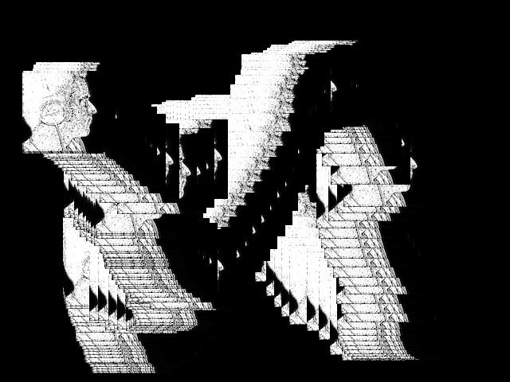

OVERVIEW
In the 2002 sci-fi movie Minority Report (based on a Philip K. Dick short story),
Tom Cruise played a “pre crime” policeman who uses the predictions of psychics to
anticipate and prevent violent crimes. Cruise accesses these predictions as a series
of images on a projected screen that he navigates with gestures. He drags his hands to
pull in new images, spreads them apart to zoom in on a telling detail, pinches to zoom out to the big picture.
BASIC VERSION: ONE IMAGE
We need to give the user the ability to “drop” the image, to stop it moving by clicking the mouse.
## CODE
```
import SimpleOpenNI.*;
SimpleOpenNI kinect;
int closestValue;
int closestX;
int closestY;
float lastX;
float lastY;
// declare x-y coordinates for the image
float image1X;
float image1Y;
// declare a boolean to store whether or not the image is moving
boolean imageMoving;
// declare a variable
// to store the image
PImage image1; //1)
void setup()
{
size(640, 480);
kinect = new SimpleOpenNI(this);
kinect.enableDepth();
// start the image out moving
// so mouse press will drop it
imageMoving = true;
// load the image from a file
image1 = loadImage("image1.jpg");
background(0);
}
void draw()
{
closestValue = 8000;
kinect.update();
int[] depthValues = kinect.depthMap();
for(int y = 0; y < 480; y++){
for(int x = 0; x < 640; x++){
int reversedX = 640-x-1;
int i = reversedX + y * 640;
int currentDepthValue = depthValues[i];
if(currentDepthValue > 610
&& currentDepthValue < 1525
&& currentDepthValue < closestValue) //2)
{
closestValue = currentDepthValue;
closestX = x;
closestY = y;
}
}
}
float interpolatedX = lerp(lastX, closestX, 0.3);
float interpolatedY = lerp(lastY, closestY, 0.3);
// clear the previous drawing
background(0); //3)
// only update image position
// if image is in moving state
if(imageMoving){
image1X = interpolatedX;
image1Y = interpolatedY;
}
//draw the image on the screen
image(image1,image1X,image1Y);
lastX = interpolatedX;
lastY = interpolatedY;
}
void mousePressed(){
// if the image is moving, drop it
// if the image is dropped, pick it up
imageMoving = !imageMoving;
}
```
EXECUTE
Once you’ve added your image, run the sketch and you should see
your image floating around the screen, following your outstretched hand.
1) HOW DOES THIS SKETCH WORK?
- Declaring and loading an image
- image1X and image1Y, which will hold the position
of our image and a Boolean called imageMoving, which will keep
track of whether or not the user has “dropped” the image.
1) HOW DOES THIS SKETCH WORK?
- If image-Moving is true, clicking the mouse
will set it to false, and vice versa. That way the mouse button
will act to drop the image if the user is currently moving it
around and to start it moving around again if it’s dropped.
2) AFTER INTERPOLATE
- If our imageMoving variable is true, we update our image’s x-y
coordinates based on interpolatedX and interpolatedY.
- We draw the image using those coordinates whether
or not it is currently being moved.
2) AFTER INTERPOLATE
- If the image is being moved, image1X and image1Y
will always be set to the most recent values of interpolatedX and interpolatedY.
- When you click the mouse and set imageMoving to false,
image1X and image1Y will stop updating from the interpolated coordinates.
However, we’ll still go ahead and draw the image using the most recent
values of image1X and image1Y.
3) CLEAR THE WHOLE SKETCH TO BLACK
- If we didn’t do that, we’d end up seeing trails of our image as we moved it around.
- Processing always just draws on top of whatever is already there.
- If we don’t clear our sketch to black, we’ll end up constantly displaying
the image on top of old copies of itself in slightly different positions.
CLEAR THE WHOLE SKETCH TO BLACK

ADVANCED VERSION: MULTIPLE IMAGES AND SCALE
Two changes.
1) It’ll control multiple images. That change is not going to introduce
any new concepts, but will simply be a matter of managing more variables
to keep track of the location of all of the images and remembering which
image the user is currently controlling.
ADVANCED VERSION: MULTIPLE IMAGES AND SCALE
Two changes.
2) We’ll give the user the ability to scale each image up and down by moving
her hand closer to or farther from the Kinect. To do this, we’ll need to use
closestValue, the actual distance of the closest point detected in the image.
## CODE
```
import SimpleOpenNI.*;
SimpleOpenNI kinect;
int closestValue;
int closestX;
int closestY;
float lastX;
float lastY;
float image1X;
float image1Y;
// declare variables for
// image scale and dimensions
float image1scale;
int image1width = 100;
int image1height = 100;
float image2X;
float image2Y;
float image2scale;
int image2width = 100;
int image2height = 100;
float image3X;
float image3Y;
float image3scale;
int image3width = 100;
int image3height = 100;
// keep track of which image is moving
int currentImage = 1;
// declare variables
// to store the images
PImage image1;
PImage image2;
PImage image3;
void setup()
{
size(640, 480);
kinect = new SimpleOpenNI(this);
kinect.enableDepth();
// load the images
image1 = loadImage("image1.jpg");
image2 = loadImage("image2.jpg");
image3 = loadImage("image3.jpg");
}
void draw(){
background(0);
closestValue = 8000;
kinect.update();
int[] depthValues = kinect.depthMap();
for(int y = 0; y < 480; y++){
for(int x = 0; x < 640; x++){
int reversedX = 640-x-1;
int i = reversedX + y * 640;
int currentDepthValue = depthValues[i];
if(currentDepthValue > 610 && currentDepthValue < 1525
&& currentDepthValue < closestValue){
closestValue = currentDepthValue;
closestX = x;
closestY = y;
}
}
}
float interpolatedX = lerp(lastX, closestX, 0.3);
float interpolatedY = lerp(lastY, closestY, 0.3);
// select the current image
switch(currentImage){ //1)
case 1:
// update its x-y coordinates
// from the interpolated coordinates
image1X = interpolatedX; //2)
image1Y = interpolatedY;
// update its scale
// from closestValue
// 0 means invisible, 4 means quadruple size
image1scale = map(closestValue, 610,1525, 0,4);
break;
case 2:
image2X = interpolatedX;
image2Y = interpolatedY;
image2scale = map(closestValue, 610,1525, 0,4);
break;
case 3:
image3X = interpolatedX;
image3Y = interpolatedY;
image3scale = map(closestValue, 610,1525, 0,4);
break;
}
// draw all the image on the screen
// use their saved scale variables to set their dimensions
image(image1,image1X,image1Y,
image1width * image1scale, image1height * image1scale); //3)
image(image2,image2X,image2Y,
image2width * image2scale, image2height * image2scale);
image(image3,image3X,image3Y,
image3width * image3scale, image3height * image2scale);
lastX = interpolatedX;
lastY = interpolatedY;
}
void mousePressed(){
// increase current image
currentImage++;
// but bump it back down to 0
// if it goes above 3
if(currentImage > 3){
currentImage = 1;
}
println(currentImage);
}
```
EXECUTE
To run this code, you’ll need to use three images of your own.
1) HOW DOES THIS SKETCH WORK?
- Once you’ve set up your images, you’ll be ready to run this sketch.
Set up your Kinect so that you’re three or four feet away from it and
there’s nothing between it and you.
1) HOW DOES THIS SKETCH WORK?
- First, we’ll look at how this sketch works with multiple images. We’ll
see how it remembers where to position each image and how it decides which
image should be controlled by your current movements.
- Then, we’ll move on to looking at how this sketch uses the distance of the
closestPoint to scale the images.
CURRENT IMAGE
How does our draw function use currentImage to decide which image to control?
Just keeping currentImage set to the right value doesn’t do anything by itself.
We need to use its value to change the position of the corresponding image.
1) SWITCH
With a switch statement, we can choose which image position to update
based on the value of our currentImage variable.
2) INTERPOLATION
Inside of each case we use the interpolated value of the closest
point to set the x- and y-values of the selected image. Before this point
in the sketch, we found the closest point for this run of the sketch and interpolated
it with the most recent value to create a smoothly moving position.
3) CHANGE IN NOT CURRENT IMAGES
The images that aren’t current will have their x- and y-coordinates un- changed.
SIZE OF IMAGES
- Processing’s image function lets us set the size to display each image by passing
in a width and a height
- When the user is controlling an image, we’ll use the depth of the
closest pixel to scale these values up and down.
SIZE OF IMAGES
- Only update the scale of the image that the user is actively controlling so the
other images will stick at whatever size the user left them.
- When we call image, we’ll pass in the scaled values for each image’s width and
height to set them to the right size.